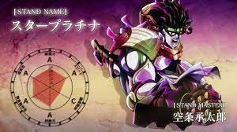

Star Platnium No Requiem es un stand el cual requiere habilidad para usarlo y si la tienes considerate alguien muy bueno en pvp, ya que el daño que produce este es muy algo comparado a otros stands, sus habilidades se recargan tan rapido que este es capaz de generar un combo infinito combinado con el estilo de pelea de boxeo que sus habilidades igualmente se recargan rapido genera un daño infinito si aquel que lo usa tiene skill

Habilidades
LMB - Puñetazo: este movimiento corto con un tiempo de reutilización corto inflige 8,9 de daño con el máximo poder destructivo y se puede combinar 5 veces, en última instancia, inflige 44,5 de daño si todos golpean.
E - Barrage: Star Platinum realiza una ráfaga de golpes asombrosamente rápida que inflige un pequeño daño por golpe. Se ha cambiado el efecto de sonido de la andanada. (1,5 al máximo poder destructivo por golpe) 1,8 con modo de rabia.
R - Barrage Finisher: Star Platinum lanza un fuerte puñetazo que convierte a la víctima en un muñeco de trapo. Rompe bloque pero PUEDE bloquearse perfectamente. (17.7 daño máx.)
T - Star Finger: Star Platinum extiende su dedo y apuñala al objetivo en los ojos, aturdiendo y cegando al objetivo, si el movimiento golpea, haría que la pantalla de la víctima se pusiera roja y borrosa. Lo cual es bueno para comenzar combos pero puede bloquearse. (24.2 de daño máximo) Este movimiento es similar a Eye Gouge del Boxing reelaborado previamente, pero tiene más alcance y daño y un poco menos de aturdimiento. Esta es la única opción de rango de Star Platinum.
Y - Ora Kicks: Star Platinum realiza una ráfaga de patadas que infligen poco daño por golpe, luego gira en su lugar para realizar un poderoso golpe de codo, derribando al enemigo. (Las patadas reparten 2,5, y la patada final reparte 11,5 con el poder destructivo máximo. Tenga en cuenta que la patada final es una verdadera ruptura de bloqueo, lo que significa que no se puede parar ni bloquear). Este movimiento se puede bloquear perfectamente en la primera patada del aluvión. .
G - Inhale: Star Platinum inhala el aire con tanta fuerza que hace que las personas cercanas a usted se acerquen al usuario. Este movimiento es bueno para extender combos o contra corredores. El oponente puede bloquear mientras está atraído y puede bloquear y desbloquear libremente durante el movimiento. El oponente también puede bombardear durante esta inhalación, pero aún puedes meterlo dentro de un combo si obtienes algo del segundo bombardeo. No puedes usar Time Stop mientras Inhale está activo.
Z - Salto de tiempo: teletransporta al usuario donde sea que esté el cursor del mouse con un alcance limitado. (Time Stop tendrá un tiempo de reutilización breve después de esto).
H - Rage Mode: cuando Rage Meter está lleno, puedes activar Rage Mode, que otorga a Star Platinum un aumento de daño del 25 % y una reducción del daño del 20 %, similar al Golden Skin de Spin. Cuando está completamente actualizado, el modo Rage dura 50 segundos.
J - The World (modo Rage): Star Platinum detiene el tiempo por un corto período de tiempo. La duración máxima de Time Stop es de 5 segundos. Esto solo se puede usar cuando el modo de ira está activo y una vez que usa el modo de ira y la parada de tiempo, su barra de ira se agotará por completo a menos que cancele la parada de tiempo antes.
X - Stand Jump: Tú y Star Platinum saltan alto en el aire. La altura del salto varía según la cantidad de mejoras que tengas y te lanzará el doble de lejos durante una parada de tiempo gracias a la reducción de la gravedad. El mundo también puede usar este movimiento.